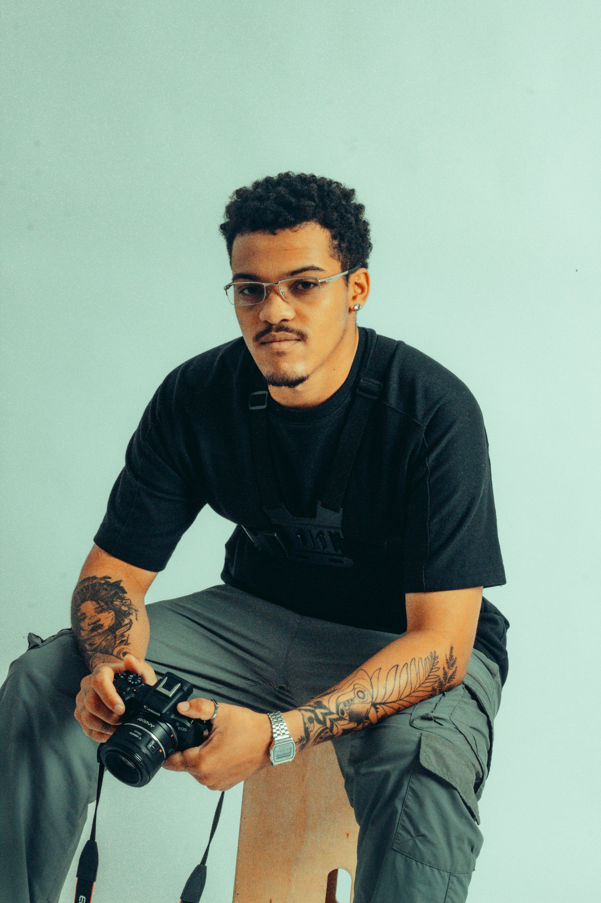
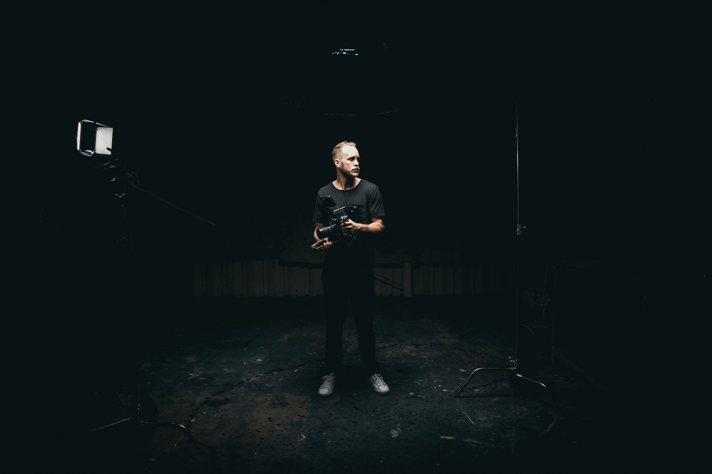

Behind the frame
Present for the day.
Attentive to you.

A small studio. A considered eye.
A little direction.
A lot of attention.
We photograph with direction when needed and disappear into the room when it matters. The best image is often the one that happens after everyone stops thinking about the camera.
Based in Baku, GARA FRAME is built around a simple approach: understand the people, learn the rhythm of the day, and stay open to what unfolds. A conference, a forum, a corporate gathering — each asks for a different kind of attention.
We look for photographs that hold both the occasion and the person. Carefully composed, but never at the expense of a real moment.
Gara Frame
A fictional studio profile, created for this showcase.
How we work
Before, during
and long after.
Listen first.
We begin with your people, your plans and what matters most. The photographs should grow from that conversation.
Stay present.
We know when to help a portrait along and when to let a moment finish. A calm presence makes room for an honest picture.
Edit with care.
The final collection has a rhythm of its own. Every image is chosen and finished to belong to the story.
